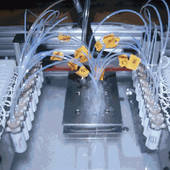

 |
|
Biology is a medium for creation. Deoxyribonucleic acid (DNA) is the conveniently accessible and relatively static information storage device for biological systems. Today, by combing synthetic chemistry with engineered biochemical reactions it is possible to create large pieces of DNA from its raw components directly and independent of existing biological systems. Here one part of this process, the chemical dispensing unit from a massively parallel DNA synthesizer, is shown. Image courtesy of Roger Brent. |